Autonomous Bot for Optical Character recognition
Report
DEPARTMENT OF COMPUTER SCIENCE & I.T.
2019-2020
Problem Statement:
It's always good to adopt smart office technologies with the use of IoT and AI.
We are building a bot which shall transfer files and other needy items from one cabin to other.
We shall add-on these technologies to:
- Increase productivity
- Streamline daily routine tasks
- Make a comfortable environment for employees.
Intelligent Office: a Luxury or a Necessity?
Many people are still hesitant to invest in IoT in the workplace while some of them who have tried various products have mixed feelings about them.
It is ones call whether to implement these solutions in your office or not. But let’s keep in mind that even the slightest increase in one's business efficiency can become a powerful competitive advantage over the competition. And not to mention the fact that a comfortable office environment can help you attract and retain the best talent.
As you can see, the benefits of IoT in an office are obvious.
However, there are still some downsides to consider…
- Having dependence on the power supply and Wifi Connection
Finally, our idea is to propose an efficient solution for the faculties of our institution so their productivity and work enhancement could be done.
Proposed Solution:
We live in times when any organisation or company should adapt to the changing technology to scale and to stay relevant in this growing world.
Real-Time Optical character recognition(OCR):
Extracting texts from images has found numerous applications like:
- Passport recognition
- Automatic number plate recognition
- Converting handwritten texts to digital text
Challenges OCR faces:
- Complex backgrounds
- Noise
- Geometrical Distortions in the image
- Lightning and different font
Reading text in the wild
Any Typical machine learning OCR pipeline follows the following steps :
(Credits: Nanonets)
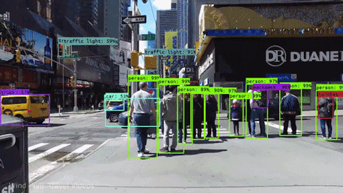
So, one might wonder what actually Image Preprocessing is…!
- Remove the noise from the image
- Remove the complex background and lightning conditions from the image
- Adjust Geometrical Distortions in the image
Below image shall be beneficial for understanding the difference between noise and denoised image.
Source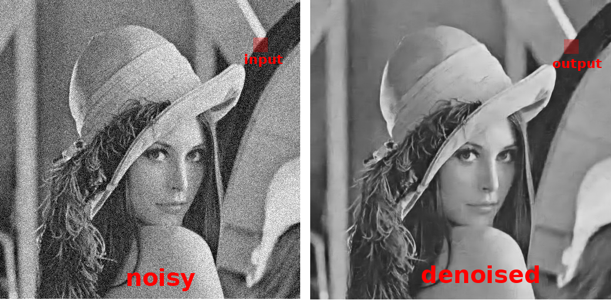
Now the next step is:
Text detection techniques required to detect the text in the image and create a bounding box around the portion of the image having text.
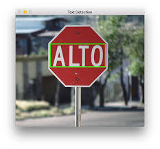
EAST (Efficient accurate scene text detector)
- This is a very robust deep learning method for text detection.
- It can find horizontal and rotated bounding boxes. It can be used in combination with any text recognition method.
- It utilizes the fully convolutional network to directly produce word or text-line level prediction.
- EAST can detect text both in images and in the video.
Research Paper Link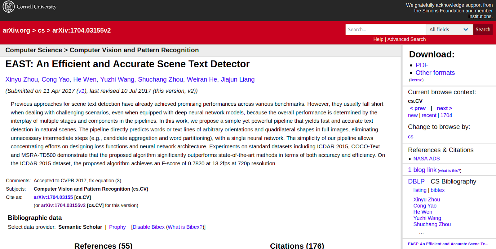
Once we have detected the bounding boxes having the text, the next step is to recognize text.
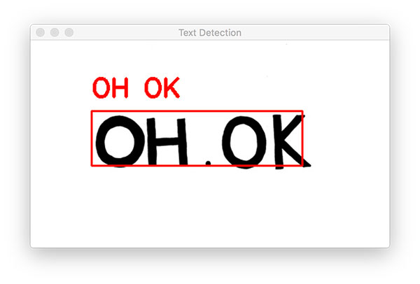
Machine Learning OCR with Tesseract
- Tesseract, a highly popular OCR engine, was originally developed by Hewlett Packard in the 1980s.
- Was then open-sourced in 2005.
- Google adopted the project in 2006 and has been sponsoring it ever since.
- It’s Deep-learning based method performs better for the unstructured data.
- Tesseract 4 added deep-learning based capability with LSTM network(a kind of Recurrent Neural Network) based OCR engine
- The latest stable version 4.1.0 is released on July 7, 2019.
Flow Diagram of our Optical character recognition(OCR):
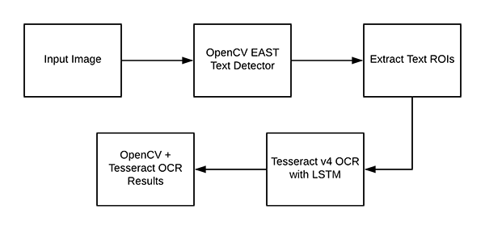
Why OpenCV?
- OpenCV is an Open Source Computer Vision Library that includes several hundreds of computer vision algorithms.
- OpenCV has a modular structure, which means that the package includes several shared or static libraries. Some of the modules are:
- Core functionality
- Image Processing
- Camera Calibration and 3D Reconstruction
- Object Detection and many more...
- All the OpenCV classes and functions are placed into the cv namespace. So to access its functionality we just have to add:
Modules of our interest in OpenCV:
There are many modules in OpenCV but we are only interested in following modules for Scene Text detection and recognition:
- Scene Text Detection
- Scene Text recognition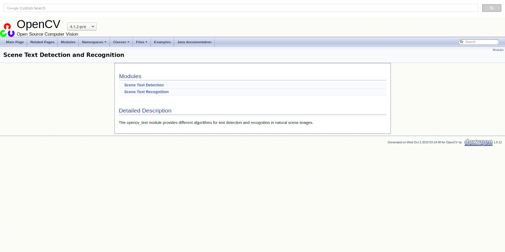
Now, some hardware details of our project...
Operating System: Raspbian OS
Raspberry Pi specs:
- Model Name - Raspberry Pi 3B
- 1GB RAM
- 4 USB 2 ports
- Full-size HDMI
- Micro SD port for loading your OS
Arduino UNO: Controlling Motors for our circuit
4 DC motors (200 RPM)
Li-Poly Battery - 11.1 V, 22000 mAh, Rechargeable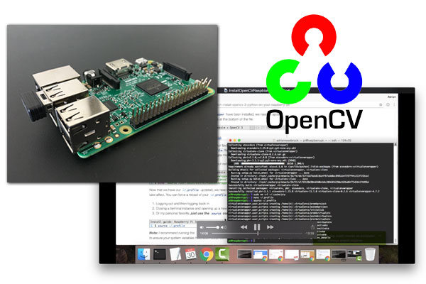
Finally, Our project console window shall look like:
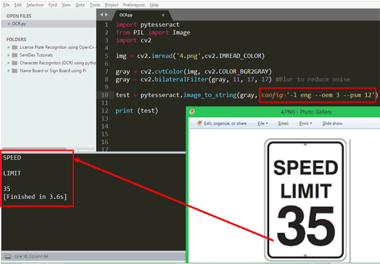
Results:
- Our code uses OpenCV EAST model for text detection and tesseract for text recognition.
- It is important to note that Tesseract normally requires a clear image for working well.
- In our current implementation, we did not consider rotating bounding boxes due to its complexity to implement.
How our Raspberry Pi works:
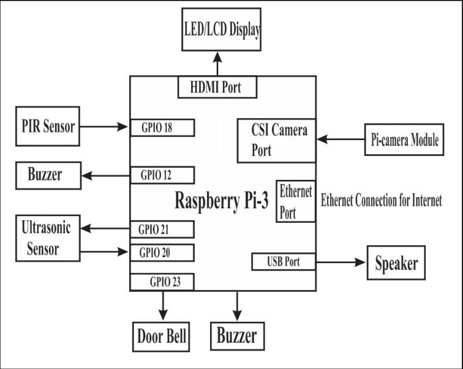
Work Flow of our project: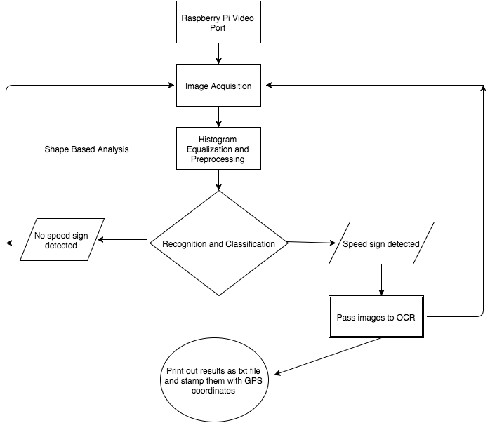
Tools/Technologies Used
- OpenCV: It is a library of programming functions mainly aimed at real-time computer vision.
- EAST: a deep learning model, based on a novel architecture and training pattern.
- Tesseract: It has implemented a Long Short Term Memory (LSTM) based recognition engine.
- Geany: Light and efficient Text editor used in Raspberry Pi
- LSTM: They are a very promising solution to sequence and time series related problems. They have an edge over conventional feed-forward neural networks and RNN in many ways. This is because of their property of selectively remembering patterns for long durations of time.
- Pytesseract: Python Wrapper for tesseract.
- Imutils: A series of convenience functions to make basic image processing functions such as translation, rotation and resizing much easier with OpenCV and python.
Comprehension & Awareness
Existing Research Papers and our references:
- East: https://arxiv.org/abs/1704.03155/
- The Tesseract OCR Engine: https://ieeexplore.ieee.org/document/4376991
- LSTM:https://www.analyticsvidhya.com/blog/2017/12/fundamentals-of-deep-learning-introduction-to-lstm/
- https://nanonets.com/blog/deep-learning-ocr/
- https://www.pyimagesearch.com/2018/08/20/opencv-text-detection-east-text-detector/
There were alternatives to technologies which we used but due to their drawbacks, we didn’t use them.
For Text detection:
Text detection techniques required to detect the text in the image and create a bounding box around the portion of the image having text.
There were two other techniques which could be used:
Sliding window technique: In this technique, a sliding window passes through the image to detect the text in that window, like a convolutional neural network. We try with different window size to not miss the text portion with different size.
However, this is a computationally expensive task.
Single Shot and Region-based detectors: There are single-shot detection techniques like YOLO(you only look once) and region-based text detection techniques for text detection in the image.
For Text recognition:
CRNN: Convolutional Recurrent Neural Network is a combination of CNN, RNN. It can be used for image-based sequence recognition tasks, such as scene text recognition and OCR.
A research paper regarding this: https://arxiv.org/abs/1507.05717
Working: The convolution neural network extracts features from the input image(text detected region). The deep bidirectional recurrent neural network predicts label sequence with some relation between the characters. The transcription layer converts the per-frame made by RNN into a label sequence.
Drawbacks:
Training of CRNN is computationally very expensive and requires a certain benchmark of hardware requirements.
Also, training a neural net is better if there is a single character which needs to be detected. For words or strings, special RNN like LSTM shall be considered.